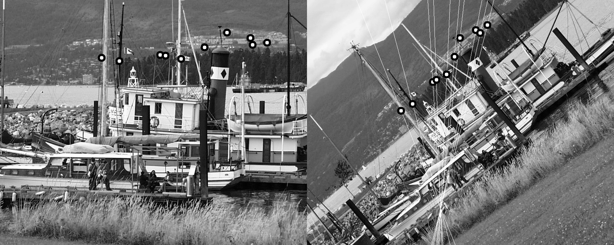
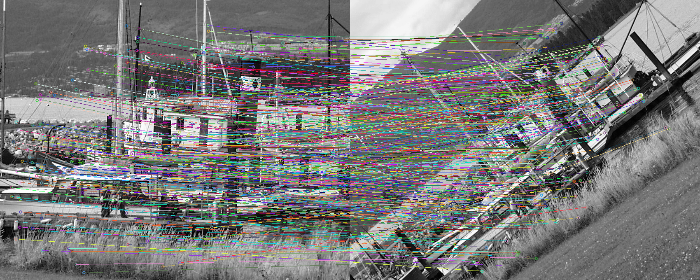

Number of Good points Detected = 410
F =
[4.147123927951803e-06, -5.010567023902828e-06, 0.002061312417675931;
5.002796900575521e-06, 4.121652222919387e-06, -0.003034256008585902;
-0.004439789737431865, -0.0005407426703861185, 1]
Reprojection Error = 1.17254
Detection time = 184.503
Extraction time = 316.449
Matching time = 316.449
Time to find F = 53.146
|  |
Epipolar Lines |
|  |
Matches |
Object Aligned to Scene Image |
Panorama |